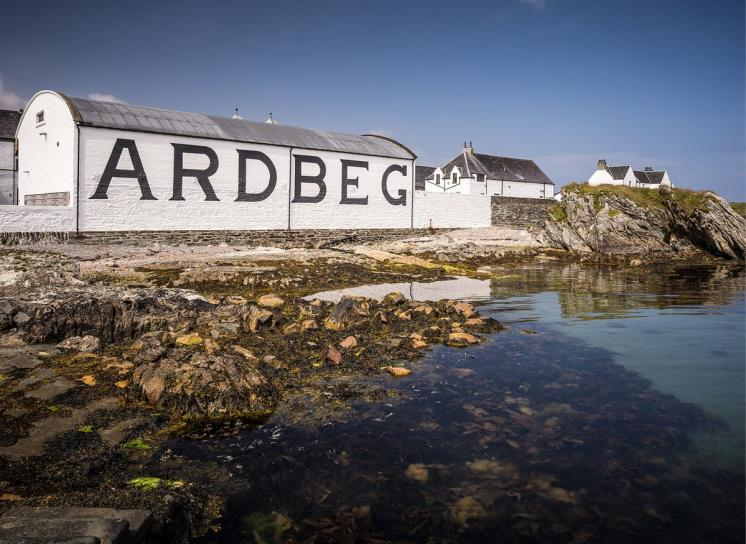
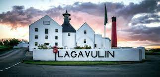

Ardbeg
Ardbeg Distillery는 스코틀랜드의 아일라섬에 위치한 유명한 피트 위스키 증류소입니다. 아드벡은 강한 피트 향과 독특한 맛으로 전 세계적으로 유명하며 위스키 애호가들 사이에서 높은 평가를 받고 있습니다.
Laphroaig
Laphroaig Distillery는 스코틀랜드 아일라섬에 위치한 또 다른 유명한 피트 위스키 증류소입니다. 라프로익은 그 강렬한 피트 향과 스모키한 맛으로 전세계적으로 인기를 끌고 있습니다.
Lagavulin
Lagavulin Distillery는 스코틀랜드 아일라섬에 위치한 유명한 싱글몰트 위스키 증류소입니다. 라가불린은 그 깊고 풍부한 피트 향과 훈제 향으로 인해 많은 위스키 애호가들에게 사랑받고 있습니다.